Історія Casio: як доступні електронні годинники стали культурними іконами

Свого часу продукція цієї компанії одночасно була на руках у Білла Гейтса і членів Аль-Каїди, на зап’ястях президентів і школярів, мільярдерів Кремнієвої долини та солдатів у джунглях. Це бренд, чиї годинники коштують менше, ніж обід у McDonald’s для родини, але вони стали справжніми культурними іконами, що пережили десятки технологічних революцій.
Це годинники, які бачили кінець холодної війни, народження інтернету та епоху смартфонів, але досі виробляються мільйонами екземплярів щороку, з незмінним дизайном понад 35 років. Я говорю про Casio — найбільший годинниковий бренд планети за обсягом продажів.
Це історія про демократизацію технологій, про геніальність простоти і про те, як функціональність перемагає статус. Це розповідь про те, як невелика японська компанія, що почала з виробництва кілець для сигарет у руїнах післявоєнного Токіо, створила легендарні F-91W, непереможні G-Shock та десятки інших моделей, які назавжди змінили уявлення про те, якими мають бути електронні годинники.
Фаза 1: від попільниці до калькуляторів
Історія компанії Casio починається не з годинників, а з простого винаходу, народженого в розрухах післявоєнної Японії. У квітні 1946 року інженер Тадао Касіо заснував невелику компанію Kashio Seisakujo у Токіо. Нагадаю, що країна тоді лежала в руїнах після Другої світової війни, японська економіка була знищена, інфраструктура зруйнована, а люди боролися за виживання. Саме в цих умовах Касіо і побачив можливість.
Перший продукт, який приніс успіх його компанії зараз точно здивує фанатів бренду, бо це був взагалі не гаджет та не інший електронний пристрій, а просте кільце-тримач для сигарет під назвою “юбіва-пайпу” (Yubiwa Pipe). У країні, де люди ледве зводили кінці з кінцями, можливість викурити сигарету до кінця, не обпікаючи пальці та не марнуючи дорогий тютюн, була справжнім благом. Для них тютюн був розкішшю, яку не можна було марнувати, і цей простий винахід став хітом.
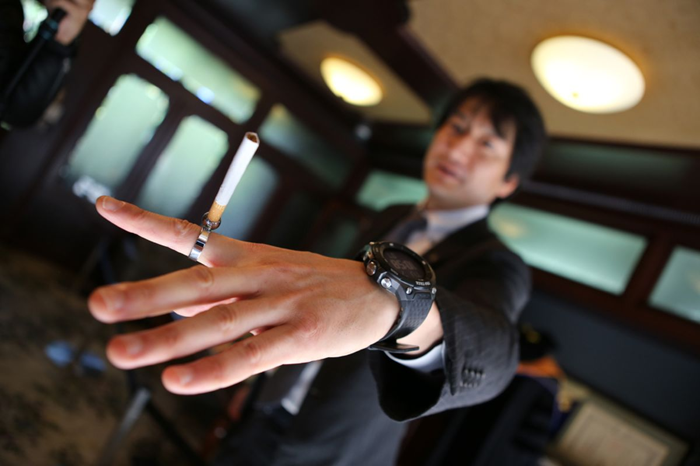Але Тадао Касіо і його брати Тосіо, Кадзуо та Юкіо мріяли про більше. Всі четверо були технічними ентузіастами з різними талантами: Тадао був інженером-винахідником, Тошіо — інженером-розробником, Кадзуо займався продажами, а Юкіо відповідав за виробництво. Разом вони створили ідеальну команду для технологічного стартапу, хоча такого терміну тоді ще не існувало.
У 1949 році на бізнес-виставці в Токіо брати Касіо побачили електричні калькулятори. Це були величезні, незграбні машини, які працювали на електромеханічних реле. Такі пристрої важили десятки кілограмів, споживали багато електроенергії та коштували як автомобіль. Саме тоді хлопці зрозуміли, що майбутнє за обчисленнями, але ці машини точно мають стати меншими, швидшими та доступнішими. Наступні п’ять років сімейство Касіо витратило на розробку власного калькулятора, інвестуючи кожну ієну від продажу “юбіва-пайпу”. Це була величезна ставка для маленької компанії і вона спрацювала.
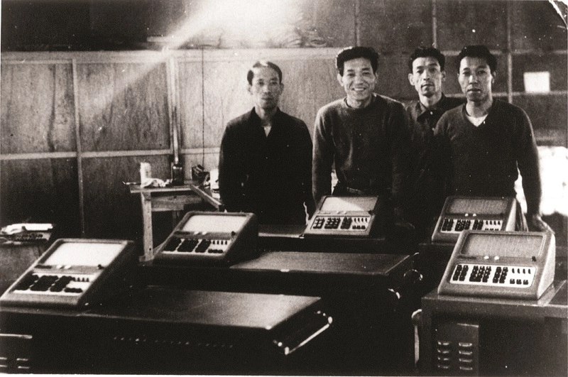Вже у 1954 році світ побачив перший японський електромеханічний калькулятор. На той час він був революційним завдяки 10-клавішній панелі замість важких важелів та єдиному вікну дисплея. Конкуренти використовували окремі вікна для кожної цифри, що робило пристрої величезними та незручними. Рішення Casio було елегантнішим і практичнішим. Через три роки, у червні 1957 року, компанія офіційно стала Casio Computer Co., Ltd., а вже через рік представила модель 14-A. Це був перший у світі повністю електричний компактний калькулятор на релейній технології.
Вся спадщина калькуляторів у вигляді мініатюризації, точності та масово виробництво стане фундаментом для їх майбутнього успіху в годинниковій індустрії. Філософія братів та їх компанії була проста, мала на меті зробити складні технології доступними для мас, а ще вона ніколи не змінювалася.
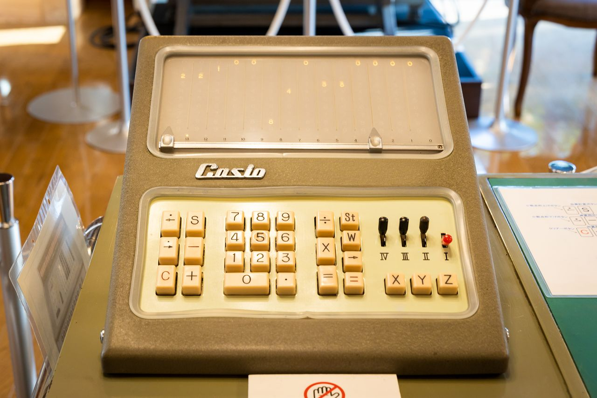Фаза 2: кварцева революція
1970-ті роки назавжди змінили годинникову індустрію. Швейцарські майстри, які століттями створювали механічні шедеври, раптом зіткнулися з екзистенційною загрозою у вигляді кварцової технології. Японські компанії Seiko, Citizen і, звісно, Casio, запропонували світу електронні годинники, які були точнішими, дешевшими та надійнішими за найдорожчі швейцарські механізми. Це була не просто конкуренція, а фактичне знищення традиційної бізнес-моделі.
Швейцарська годинникова індустрія, яка налічувала понад 1600 виробників і працевлаштовувала близько 90 000 людей на початку 1970-х, зазнала катастрофічних втрат. До середини 1980-х кількість компаній скоротилася до 600, а робочих місць до 30 000. Цей період увійшов в історію як “кварцова криза”, і ще він фундаментально змінив уявлення про те, чим та яким має бути годинник.
Casio увійшла на ринок годинників у 1974 році з моделлю Casiotron — першим у світі наручним годинником з функцією автоматичного календаря. Це був не просто електронний годинник, а справжній комп’ютер на зап’ясті. Вже тоді ця модель “розуміла”, що лютий має 28 днів (або 29 у високосний рік), а інші місяці 30 або 31. До цього всі електронні годинники потребували ручного коригування календаря. Один із братів-засновників Тосіо Касіо сформулював філософію компанії, яка звучала так: “Годинник — це не прикраса, а прилад, який обчислює час”. І ця філософія визначила весь подальший шлях бренду.

У 1977 році з’явилася модель Casio F-100. Це був один із перших годинників з корпусом зі смоли замість металу. Такий матеріал був легшим, дешевшим у виробництві та дозволяв експериментувати з формами. Це зробило його неймовірно легким і відкрило шлях до масового виробництва за низькою ціною. А в 1980 році Casio об’єднала свої дві найбільші експертизи, випустивши годинник-калькулятор C-80 з гумовими кнопками, які можна було натискати пальцем. Подібне здається очевидним нам з вами зараз, але тоді це була неймовірно крута інновація. Проте справжні легенди Casio були ще попереду.
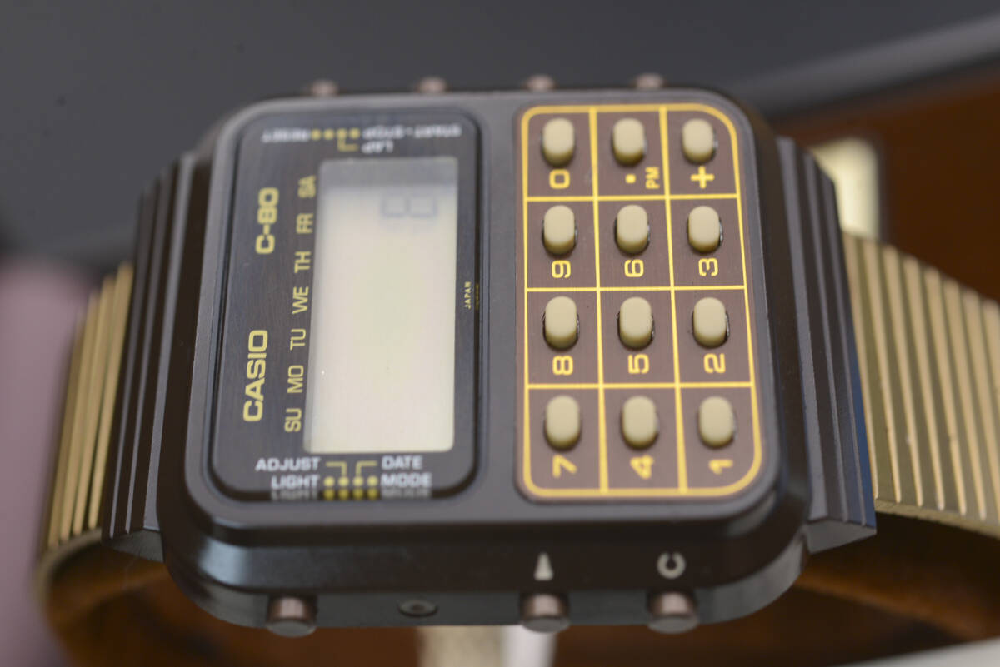Фаза 3: досконалість Casio F-91W
У червні 1989 року світ побачив електронний годинник, який назавжди змінить уявлення про те, якою має бути ідеальна модель для носіння. Новенький Casio F-91W не був революційним проривом у технологіях, не мав GPS, не підключався до супутників та не вимірював пульс. Але при цьому він був майже довершеним. Його дизайнер Рюсуке Моріає створив модель, яка поєднала усе, чого компанія навчилася за півтора десятиліття роботи з електронікою, і очистила це від усього зайвого.
Характеристики Casio F-91W виглядають дуже скромно. В нього компактний плаский корпус зі смоли з габаритами 38.2×35.2×8.5 мм, вага всього 21 грам, є кварцовий механізм Module 593 з точністю ±30 секунд на місяць, та батарея, що працює сім років. Серед базового набору функцій маємо секундомір, будильник, календар і слабке зелене підсвічування, яке ледь освітлює циферблат у темряві. Як бачимо, тут немає жодних вишуканих ускладнень, пафосу та непотрібних функцій. Ну, й ціна годинника складала 10-20 доларів залежно від країни.
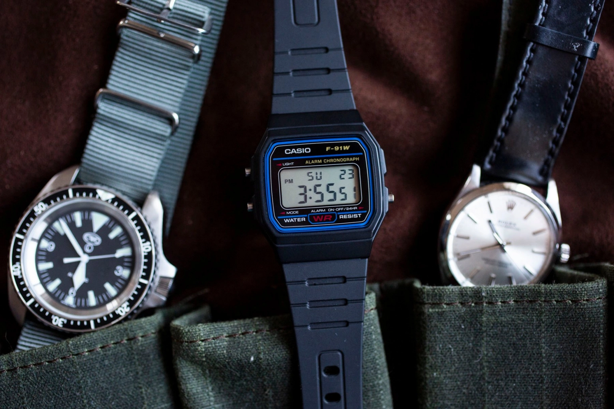Зрозуміло, що це не був годинник для багатих. Але це був електронний годинник для всіх. Для школяра, який купує свій першу модель. Для студента з обмеженим бюджетом, якому потрібен надійний годинник для іспитів. Для мандрівника, якому потрібен інструмент, що не зламається в джунглях Амазонки або пустелі Сахара. Або навіть для мільярдера, який не хоче афішувати своє багатство і цінує чесну функціональність понад демонстративне споживання.
За 36 років після релізу було продано понад 120 мільйонів екземплярів Casio F-91W. Компанія дотепер щорічно виробляє та продає близько 3 мільйонів штук цієї моделі. Це робить його найпродаванішим годинником в історії людства. Також важливо розуміти, що дизайн цієї моделі не змінився жодного разу з 1989 року. Проте були певні доопрацювання та різні варіанти кольорів, але все це маркується іншими назвами.
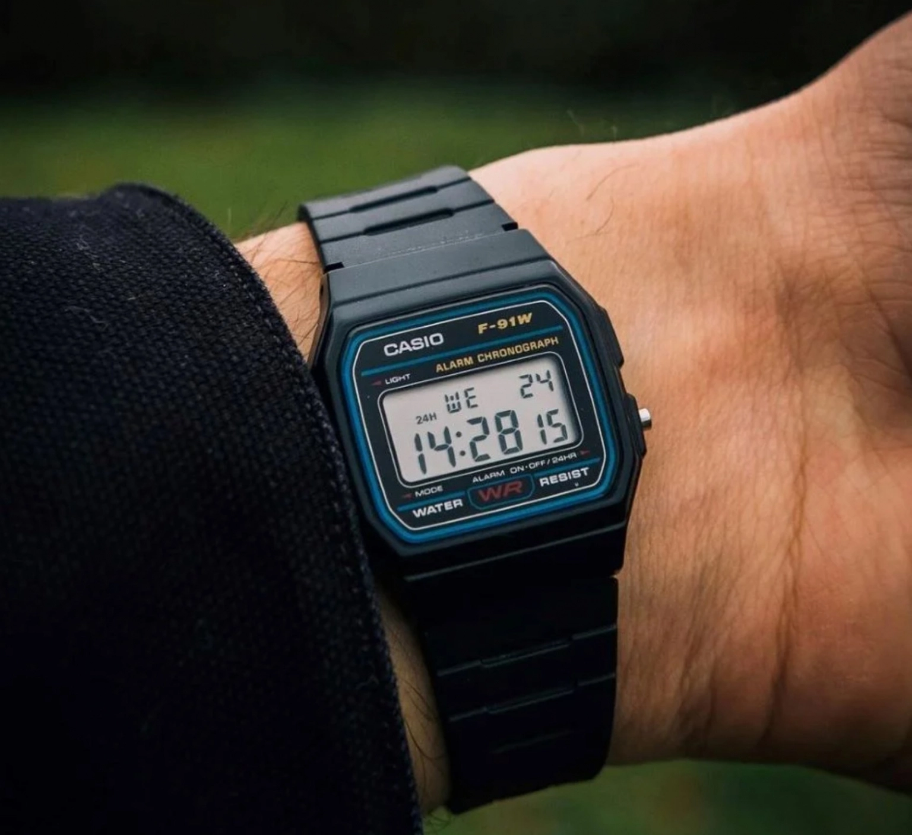Напевно, секрет Casio F-91W полягає у його простоті. Годинник не намагається бути чимось, чим не є, не претендує на розкіш, не імітує дорожчі моделі, а головне не ховає своєї пластикової природи та максимальної доступності.
Casio F-91W став унікальним культурним феноменом та артефактом. Його носили та носять буквально усі. Коли Білл Гейтс, один із найбагатших людей планети, з’являється на публіці з годинником за 20 доларів на руці, це не випадковість і не забудькуватість. Це усвідомлений вибір та потужний меседж усім іншим. Також, напевно, це тихий бунт проти культури розкоші, демонстрація того, що справжня цінність полягає не у вихвалянні статусом, а в ефективності та результатах. Колишній Президент США Барак Обама теж носив Casio F-91W, і це викликало дискусії серед експертів з протоколу.
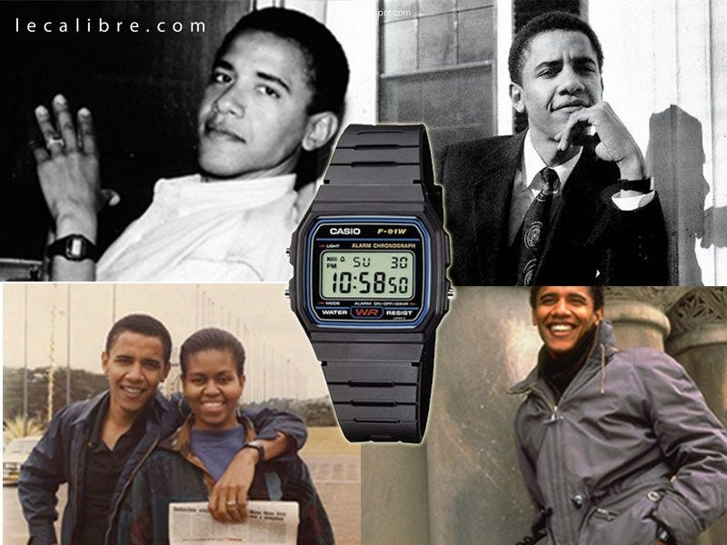У середовищі технологічних мільярдерів і венчурних капіталістів Кремнієвої долини Casio F-91W став символом так званого “прихованого багатства”. Це явище, коли по-справжньому заможні люди навмисно уникають зовнішніх проявів розкоші. Адже носити Rolex значить сигналізувати про гроші новачкам, а носити F-91W — показувати усім, що ти вже довів свою цінність і тобі не потрібна зовнішня пиха та дорогі речі.
Якості у вигляді доступності, надійності та глобальної поширеності зробили Casio F-91W інструментом для зовсім інших цілей. За даними американської розвідки, цей годинник активно використовувався членами терористичних угруповань, зокрема Аль-Каїди, як таймер для саморобних вибухових пристроїв. А причина проста, тому що як ми пам’ятаємо годинник був дешевим, доступним у будь-якій точці світу та надійним. А ще його схема дозволяла легко підключити цю модель до детонатора.
У в’язниці Гуантанамо володіння Casio F-91W вважалося одним із маркерів потенційної причетності до тероризму. І уявіть собі абсурдність ситуації, адже той самий годинник, що на руці геніального підприємця, може бути доказом у справі терориста, стає об’єктом підозри через свою ж досконалість.
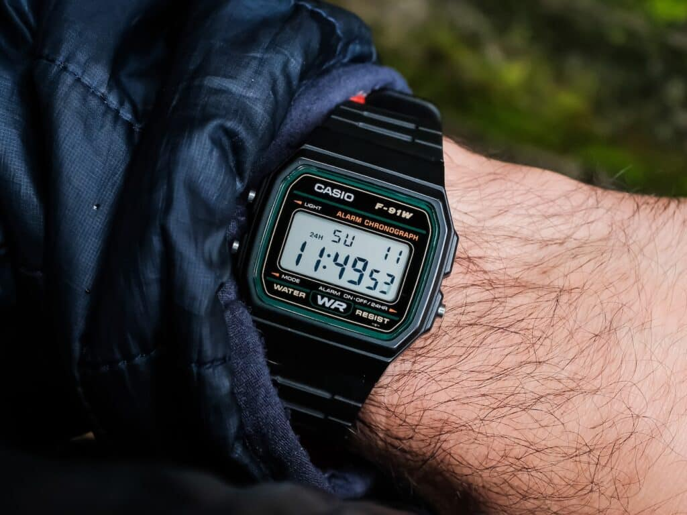Фаза 4: народження легенди G-Shock
Якщо Casio F-91W уособлював філософію демократичного ідеалу, то моделі серії G-Shock — це її бунтарський молодший брат, який вирішив стати непереможним та буквально незнищуваним. Історія цієї вже також легендарної серії почалася у 1981 році. Молодий інженер Casio Кікуо Ібе пережив особисту “трагедію”. Хлопець випадково впустив свій улюблений механічний годинник, подарований йому батьком, і той розбився прямо посеред тротуару. Дивлячись на уламки на асфальті, Ібе відчув гнів на саму хиткість речей. Це розчарування породило одержимість створити годинник, який неможливо зламати, та який точно витримає все, що може “кинути” на нього саме життя.
Кікуо Ібе сформулював концепцію під назвою “Потрійна 10”. За нею годинник має витримувати падіння з 10-метрової висоти (це приблизно висота третього поверху), мати водонепроникність 10 бар (100 метрів, що відповідає професійному дайвінгу) і працювати від однієї батареї 10 років. На папері це звучало просто, але на практиці це була майже неможлива місія, яку багато його колег тоді вважали божевільною.
Для створення такого годинника Ібе отримав окрему команду, яка за два роки створила понад 200 прототипів. Проте один за одним усі вони руйнувалися під час тестів. Інженери скидали годинники з вікон офісу на бетон внизу, заморожували їх до мінусових температур, а потім кидали в окріп, били молотками, а ще просто топтали. Кожна невдача вчила їх чомусь новому, але рішення залишалося невловним, а проєкт наближався до закриття, адже керівництво Casio втрачало терпіння.
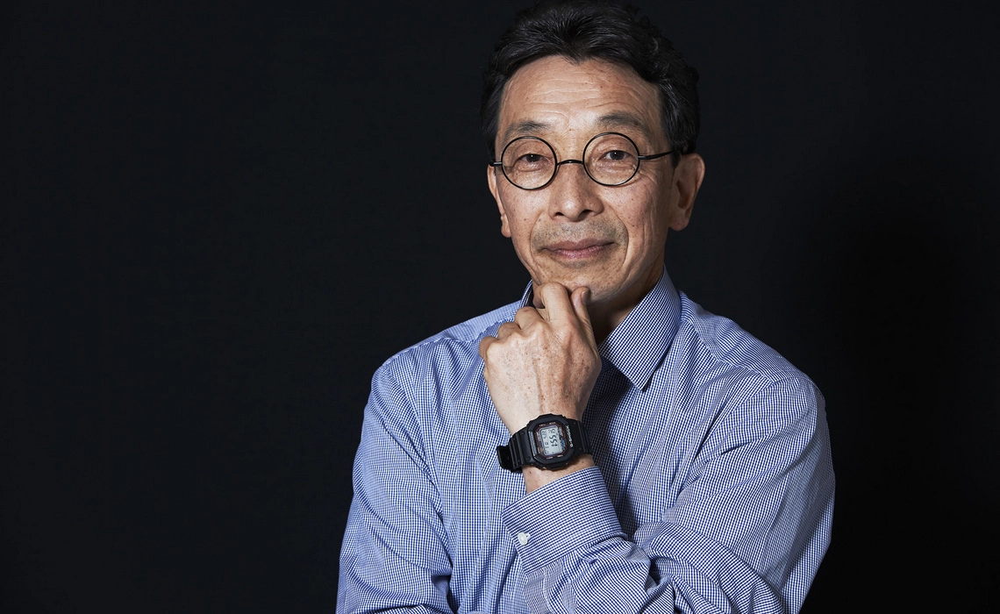Як часто буває в успішних історіях, натхнення на створення правильного рішення прийшло з несподіваного джерела. Одного дня, йдучи додому після чергової невдачі, Ібе побачив, як дитина грає з гумовим м’ячем на вулиці. М’яч падав на асфальт з великої висоти та відскакував неушкодженим, тому що його внутрішня камера була захищена зовнішнім шаром гуми. Тобто повітря всередині м’яча поглинало удар. Еврика! Це була відповідь, яку він шукав, тому модуль нового годинника має “плавати” всередині захисного корпусу, як жовток у яйці. Удар має поглинатися зовнішніми шарами, не досягаючи делікатного механізму всередині.
Саме завдяки цьому рішенню вже у 1983 році світ побачив перший G-Shock. Модель назвали DW-5000C, її модуль був оточений уретановою піною і захищений багатошаровим корпусом зі смоли. Цей електронний годинник виглядав масивним, майже брутальним та важив 70 грамів, що було повною протилежністю витонченим швейцарським моделям.
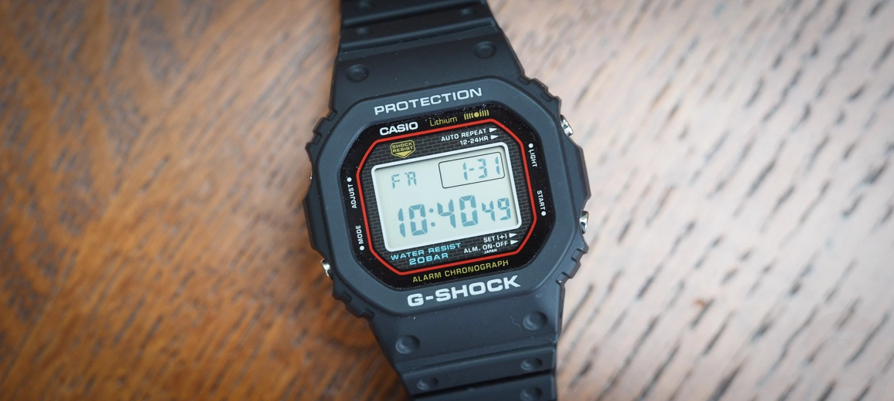Проте успіху це не принесло. Принаймні спочатку і не в Японії. Японці цінували мініатюрність і витонченість та не розуміли, навіщо потрібен такий великий і важкий годинник, тому продажі G-Shock були жахливими. Так проєкт знову опинився під загрозою. Але його врятував ринок США. Американці, з їхньою любов’ю до всього великого і функціональності понад формою, відразу оцінили G-Shock. Рекламна кампанія, де годинником грали в хокей, використовуючи його як шайбу, а потім він продовжував працювати, зробила G-Shock культовим. За перші роки було продано мільйони екземплярів.
Сьогодні G-Shock не просто лінійка годинників, а окремий всесвіт з власною філософією, естетикою та культурою. Серія налічує понад 100 мільйонів проданих[16] одиниць та сотні різних моделей від базових DW-5600 за 50 доларів до преміальних колаборацій з модними брендами. G-Shock носять скейтери і серфери, військові та рятувальники, артисти та астрофізики. Це важливий символ надійності у світі, де все постійно оновлюється, ламається та швидко застаріває.
Фаза 5: мінімалізм та універсальність CasiOak
У 2019 році Casio випустила модель, яка шокувала навіть найвідданіших фанатів бренду та викликала бурхливу реакцію в годинниковому ком’юніті. Casio GA-2100, неофіційно названий “CasiOak” спільнотою колекціонерів, був незвичною моделлю серії G-Shock з восьмикутним безелем, який неймовірно нагадував Audemars Piguet Royal Oak — один із найдорожчих і найпрестижніших годинників у світі, що коштує від 30 000 доларів і більше.
Це було зухвало і, деякою мірою, провокативно. Casio взяла дизайнерські рішення високої годинникової справи та застосувала їх до утилітарного стилю G-Shock. Цей електронний годинник був тоншим (11.8 мм проти стандартних 13-15 мм у G-Shock) і легшим за класичні G-Shock. Цього добилися завдяки новій структурі композитному матеріалу з вуглецевого волокна та смоли, який був міцнішим і легшим за звичайну смолу (Carbon Core Guard).
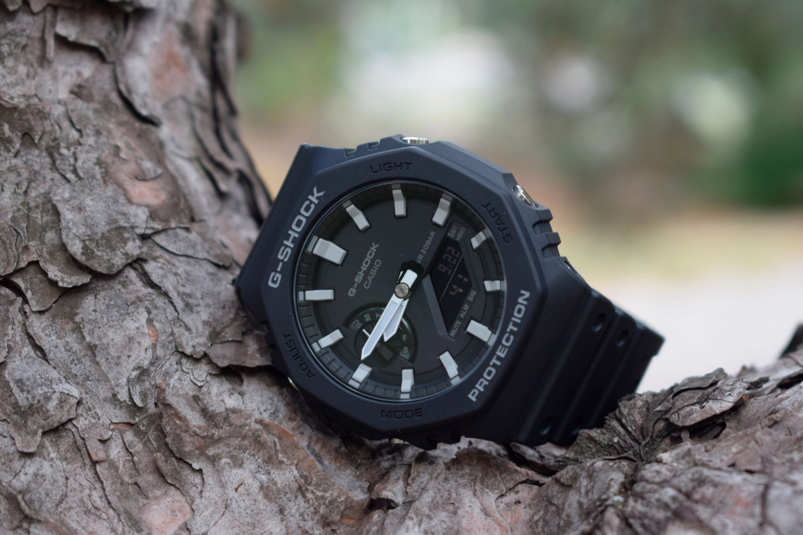CasiOak миттєво став вірусним хітом. Його ціна близько 110 доларів робила цю модель доступною альтернативою Royal Oak. Особливо для тих, хто любив дорогий дизайн, але не міг, або не хотів, витрачати десятки тисяч доларів на такий годинник. В інтернеті з’явилися сотні відео, де люди порівнювали 100-доларовий Casio з 30 000-доларовим Audemars Piguet Royal Oak, ставлячи їх поруч на столі.
Звісно, це було дещо абсурдно, адже механіка, матеріали та обробка годинників не мали нічого спільного. Але зовні, на руці, а також на відстані кількох метрів, CasiOak виглядав приголомшливо добре і викликав те саме візуальне враження.
Попит на CasiOak був настільки високим, що годинник розкуповували миттєво, і він став дефіцитним товаром. На вторинному ринку його продавали за 200-300 доларів, що було у 2-3 рази дорожче роздрібної ціни. Ну й загалом це точно був ще один приклад генія Casio, де вони взяли елементи престижного дизайну, позбавили їх снобізму та зробили доступними для мас. Це була їх класична демократизація досконалості у чистому вигляді. Також цим японці довели, що добрий дизайн не повинен коштувати цілий статок.
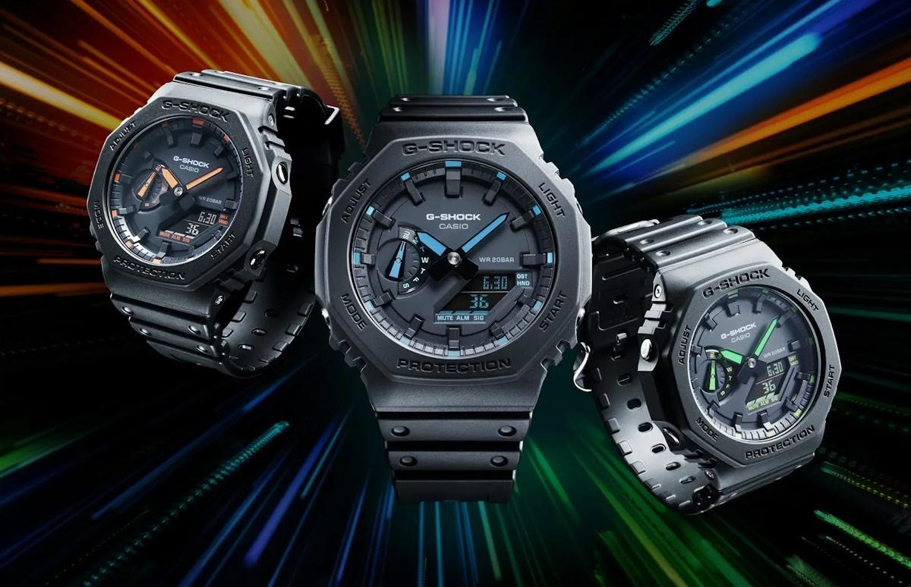Секрет успіху: чому Casio непереможний
То що робить Casio найбільшим годинниковим брендом у світі за обсягом продажів? Напевно, це не одна причина, а комбінація стратегічних рішень і філософських принципів, які працюють разом та посилюють один одного.
По-перше, японці завжди керувалися доступністю, як стратегією, адже Casio навмисно підтримує низькі ціни, бо легко могла б поставити вищі і люди все одно б їх купували. Той же згаданий вище Casio F-91W має доступну ціну в багатьох країнах світу. Це часто робить покупку імпульсивною та позбавленою тривалих роздумів. Людина не замислюється, не порівнює з конкурентами, не відкладає рішення на потім. Вона просто купує і все.
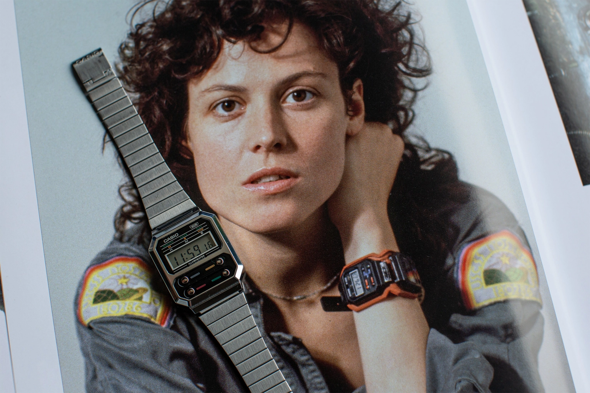А коли ще й годинник виправдовує очікування, а судячи з тисяч відео на YouTube, він майже завжди їх виправдовує, вона купує ще один і ще. А потім купує своїм дітям як перший годинник, рекомендує друзям, і записує про це відео, чи пише розлогий пост на Reddit. Так створюється лояльність, яка передається з покоління в покоління.
По-друге, Casio асоціюються з надійністю і цінять свою репутацію. Кварцові годинники Casio точніші за більшість швейцарських механічних годинників, які коштують у сотні разів дорожче. Механічний годинник може відхилятися на 5-10 секунд на день, а умовний Casio за 1000 гривень відхиляється на 30 секунд на місяць. Їхня батарея працює роками без заміни (до 10 років залежно від моделі), корпус витримує удари, воду та екстремальні температури. Їхня серія G-Shock і справді майже непереможна. В мережі можна знайти купу випадків, коли G-Shock пережив вибух, пожежу, падіння з літака тощо. Одже коли продукт працює так, як обіцяно, або навіть краще, це створює довіру. А довіра одна найцінніших валют в бізнесі.
По-третє, японські годинники цінять за функціональність, адже вони точно роблять більше, ніж просто показують час. Вони рахують, вимірюють інтервали, сигналізують про події, підсвічують циферблат у темряві, показують час у різних часових поясах, витримують глибину до 200 метрів, вимірюють висоту та атмосферний тиск тощо. Часто це дійсно інструменти у справжньому сенсі цього слова. Тобто бренд Casio залишається актуальним, бо його годинники роблять те, що не можуть сучасні смартфони: працюють без зарядки роками, витримують екстремальні умови, завжди доступні одним поглядом на зап’ястя та не відволікають повідомленнями. Так, в них вже є розумні моделі, але це радше експерименти, ніж масова подія.
Нарешті не можна викидати фактори культурного капіталу та банальної ностальгії. Casio продає не розкіш, а спогади про “краще” минуле. Продає автентичність та антистатус. Це символ епохи, коли технології були більш чесними, більш зрозумілими та ремонтопридатними. І все це у світі розумних годинників, які застарівають за два роки та швидко перетворюються на електронне сміття. Саме тому “вічний” Casio F-91W виглядає на цьому фоні дійсно чимось неймовірним.
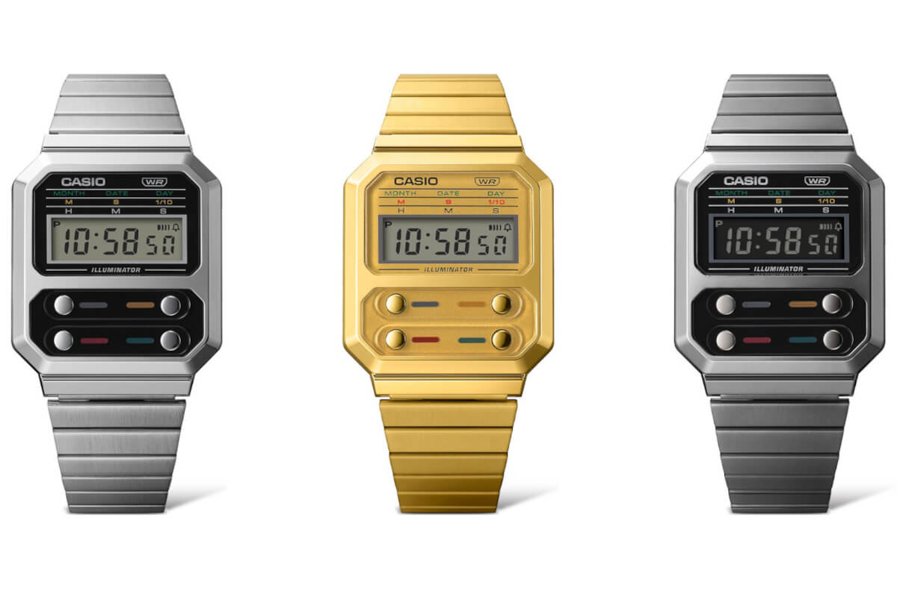Чи є майбутнє аналогового у цифровому світі?
Ми давно живемо в епоху Apple Watch та інших подібних пристроїв, тому годинники читають нашу пошту, відстежують серцебиття та дзвонять мамі. І тут постає питання в актуальності простих електронних годинників Casio. Але саме тому вони й потрібні, адже у світі, де ваш смартгодинник треба заряджати щодня, де він застаріває через умовні роки, де він збирає про вас дані й продає їх рекламодавцям, знову ж таки, умовний Casio F-91W за 20 баксів з батареєю на 7 років виглядає не архаїзмом, а чимось дійсно справжнім.
Також він дає свободу: від зарядки, оновлень, підписок, стеження чи необхідності демонструвати статус. Це інструмент, який просто показує час. І в цій простоті його геніальність.
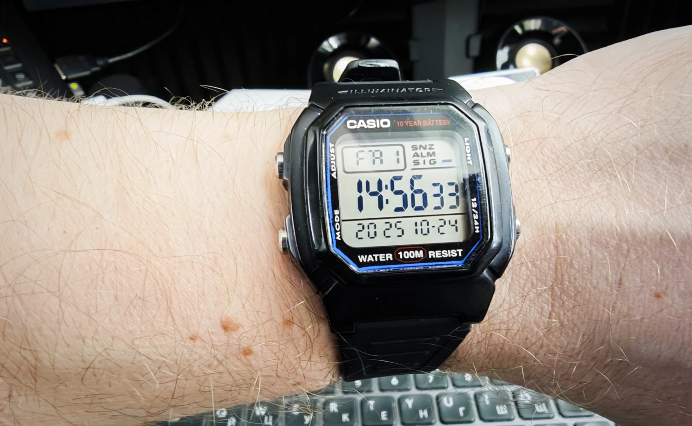Історія Casio доводить фундаментальну істину, що справжня цінність не в ексклюзивності чи ціні, а у функціональності, надійності та доступності. Брати Касіо почали з кільця для сигарет у руїнах післявоєнного Токіо, але побудували імперію на простій ідеї перетворення складного на просте, дороге на доступне. А ще створювати речі, які просто служать людям, а не демонструють статус.
Все це я можу підтвердити як багаторічний власник різних годинників Casio, які дають мені усе це і навіть більше. Роками я тестую найрізноманітніші розумні годинники та фітнес трекери, але після цього завжди вдягаю свій звичайний електронний годинник. Останні сім років це Casio W-800H, який мені дуже подобається саме цією своєю простотою та надійністю. Колись він коштував мені доступні 600 гривень, пережив зі мною дуже багато різних обставин і продовжує виконувати свою роботу. А коли він зламається, я точно куплю інший Casio. І саме тому, на мою думку, цей бренд став найбільшим годинниковим брендом світу. Не попри свою простоту. А завдяки їй.